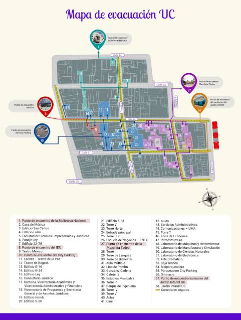

<!doctype html>
<html lang="es"><head><meta charset="utf-8">
<meta name="viewport" content="width=device-width, initial-scale=1, viewport-fit=cover">
<link rel="icon" href="data:image/svg+xml,%3Csvg xmlns=%27http://www.w3.org/2000/svg%27 viewBox=%270 0 100 100%27%3E%3Ctext y=%27.9em%27 font-size=%2790%27%3E💧%3C/text%3E%3C/svg%3E">
<title>Plataforma hídrica UCentral: prototipo</title>
<link rel="preconnect" href="https://fonts.googleapis.com">
<link href="https://fonts.googleapis.com/css2?family=Atkinson+Hyperlegible:wght@400;700&display=swap" rel="stylesheet">
<style>
:root{box-sizing:border-box;padding-top:env(safe-area-inset-top,0px);padding-bottom:env(safe-area-inset-bottom,0px);color-scheme:light;
--bg:#EEF4F5;--sf:#fff;--ink:#12313A;--mut:#566F7A;--ln:#D3E0E4;--ac:#0A7C9C;--acb:#E1F1F6;--nav:#0F3A47;
--alta:#B8341D;--altab:#FBE5E0;--media:#9A5B00;--mediab:#FBEBCF;--baja:#3F6B30;--bajab:#E4EFDC}
@media (prefers-color-scheme:dark){:root:not([data-theme="light"]){color-scheme:dark;--bg:#0E1E24;--sf:#152A32;--ink:#E3EEF1;--mut:#93AEB8;--ln:#27424C;--ac:#4CC3E3;--acb:#12363F;--nav:#0A242C;--alta:#FF8A73;--altab:#3B1A15;--media:#F2B04A;--mediab:#35280F;--baja:#8CC57A;--bajab:#1E3019}}
:root[data-theme="dark"]{color-scheme:dark;--bg:#0E1E24;--sf:#152A32;--ink:#E3EEF1;--mut:#93AEB8;--ln:#27424C;--ac:#4CC3E3;--acb:#12363F;--nav:#0A242C;--alta:#FF8A73;--altab:#3B1A15;--media:#F2B04A;--mediab:#35280F;--baja:#8CC57A;--bajab:#1E3019}
*,*::before,*::after{box-sizing:inherit}
html{scroll-padding-top:env(safe-area-inset-top,0px)}
body{margin:0;background:var(--bg);color:var(--ink);font:400 15px/1.5 "Atkinson Hyperlegible",system-ui,sans-serif}
button,input,select,textarea{font:inherit;color:inherit}
:focus-visible{outline:3px solid var(--ac);outline-offset:2px}
h1,h2,h3{margin:0;line-height:1.25}h1{font-size:1.5rem}h2{font-size:1.15rem}h3{font-size:1rem}
.app{display:grid;grid-template-columns:230px minmax(0,1fr);min-height:100vh}
.side{background:var(--nav);color:#E7F3F6;padding:20px 14px;display:flex;flex-direction:column;gap:6px}
.brand{font-weight:700;font-size:1.05rem;padding:0 8px 14px}.brand small{display:block;font-weight:400;opacity:.75}
.side button{background:none;border:0;color:inherit;text-align:left;padding:10px 12px;border-radius:8px;cursor:pointer}
.side button[aria-current=page]{background:rgba(255,255,255,.16);font-weight:700}
.side button:hover{background:rgba(255,255,255,.1)}
main{padding:20px 24px 40px;max-width:1100px;width:100%}
.top{display:flex;justify-content:space-between;align-items:center;gap:12px;margin-bottom:18px;position:relative}
.who{display:flex;gap:10px;align-items:center;flex-wrap:wrap}
.btn{background:var(--ac);color:#fff;border:0;border-radius:8px;padding:9px 14px;cursor:pointer;font-weight:700}
.btn.sec{background:var(--sf);color:var(--ink);border:1px solid var(--ln)}
.btn.warn{background:var(--alta)}
.card{background:var(--sf);border:1px solid var(--ln);border-radius:12px;padding:16px;margin-bottom:16px}
.grid3{display:grid;grid-template-columns:repeat(auto-fit,minmax(210px,1fr));gap:14px;margin-bottom:16px}
.stat b{display:block;font-size:1.9rem;line-height:1.1}.stat span{color:var(--mut);font-size:.9rem}
table{width:100%;border-collapse:collapse}th,td{text-align:left;padding:9px 8px;border-bottom:1px solid var(--ln);font-size:.92rem}
th{color:var(--mut);font-weight:700}.tw{overflow-x:auto}
.lnk{background:none;border:0;color:var(--ac);font-weight:700;cursor:pointer;padding:0;text-decoration:underline}
.b{display:inline-block;padding:2px 9px;border-radius:99px;font-size:.82rem;font-weight:700}
.Alta{background:var(--altab);color:var(--alta)}.Media{background:var(--mediab);color:var(--media)}.Baja{background:var(--bajab);color:var(--baja)}.neu{background:var(--acb);color:var(--ac)}
label{display:block;font-weight:700;margin:10px 0 4px}
input,select,textarea{width:100%;padding:9px 10px;border:1px solid var(--ln);border-radius:8px;background:var(--sf)}
.row{display:flex;gap:10px;flex-wrap:wrap;align-items:end}.row>*{flex:1 1 160px}
.err{color:var(--alta);font-weight:700;margin:8px 0 0}
.note{background:var(--acb);border-radius:8px;padding:10px 12px;font-size:.9rem;margin:10px 0}
.kv{display:grid;grid-template-columns:repeat(auto-fit,minmax(150px,1fr));gap:12px;margin:12px 0}.kv b{display:block;font-size:1.3rem}.kv span{color:var(--mut);font-size:.85rem}
svg.ch{width:100%;height:auto;display:block}.ch text{fill:var(--mut);font-size:11px}
.ch .g{stroke:var(--ln);stroke-width:1}.ch .band{fill:var(--ac);opacity:.14}.ch .ex{stroke:var(--ac);stroke-width:1.5;stroke-dasharray:5 4;fill:none}.ch .ob{stroke:var(--ink);stroke-width:1.8;fill:none}.ch .pt{fill:var(--alta);stroke:var(--sf);stroke-width:1.5}
.leg{display:flex;gap:16px;flex-wrap:wrap;font-size:.85rem;color:var(--mut);margin-top:6px}
.bell{position:relative}.panel{position:absolute;right:0;top:46px;width:min(320px,90vw);z-index:5;background:var(--sf);border:1px solid var(--ln);border-radius:12px;padding:12px;box-shadow:0 8px 24px rgba(0,0,0,.18)}
.panel p{margin:0;padding:8px 0;border-bottom:1px solid var(--ln)}.panel p:last-child{border:0}
#toast{position:fixed;left:50%;bottom:calc(20px + env(safe-area-inset-bottom,0px));transform:translate(-50%,20px);background:var(--ink);color:var(--bg);padding:10px 16px;border-radius:8px;opacity:0;transition:.2s;pointer-events:none;z-index:9}
#toast.show{opacity:1;transform:translate(-50%,0)}
.login{min-height:100vh;display:grid;place-items:center;padding:20px}.login .card{width:min(430px,100%)}
.roles{display:grid;gap:8px;margin:8px 0}.roles label{display:flex;gap:10px;align-items:center;font-weight:400;border:1px solid var(--ln);border-radius:8px;padding:10px;margin:0;cursor:pointer}.roles input{width:auto}
.foot{color:var(--mut);font-size:.82rem;margin-top:24px}
.cred{display:grid;gap:6px;margin-top:6px}.cred button{text-align:left;font-size:.85rem;padding:7px 10px;font-weight:400}.live{color:var(--mut);font-size:.85rem}
.mapwrap{position:relative;border:1px solid var(--ln);border-radius:12px;overflow:hidden;background:#fff}.mapwrap img{display:block;width:100%;height:auto}.mapwrap svg{position:absolute;inset:0;width:100%;height:100%}.mapwrap.placing{cursor:crosshair;outline:3px solid var(--ac)}
.grid2{display:grid;grid-template-columns:minmax(0,1.1fr) minmax(0,1fr);gap:16px;align-items:start}
.mk{cursor:pointer}.al{fill:var(--alta);stroke:#fff;stroke-width:2}.ok{fill:var(--ac);stroke:#fff;stroke-width:2}.mk .ex{fill:#fff;font:700 15px sans-serif}.sel{fill:none;stroke:var(--ink);stroke-width:2.5;stroke-dasharray:4 3}
.pulse{fill:var(--alta);opacity:.35;transform-box:fill-box;transform-origin:center;animation:pl 1.6s ease-out infinite}@keyframes pl{from{transform:scale(.6);opacity:.5}to{transform:scale(1.7);opacity:0}}
@media (prefers-reduced-motion:reduce){.pulse{animation:none}}
@media (max-width:760px){.grid2{grid-template-columns:1fr}}
@media (max-width:760px){.app{grid-template-columns:1fr}.side{flex-direction:row;overflow-x:auto;padding:10px}.brand{display:none}.side button{white-space:nowrap}main{padding:16px}}
@media (prefers-reduced-motion:reduce){#toast{transition:none}}
</style></head><body><div id="app"></div><div id="toast" role="status" aria-live="polite"></div>
<script>
const meds=[{id:1,c:'MED-001',u:'Torre Norte (23), baños piso 1',e:'Activo',b:34,mx:.551,my:.411},{id:2,c:'MED-002',u:'Torre Sur (24), baños piso 2',e:'Activo',b:52,mx:.561,my:.434},{id:3,c:'MED-003',u:'Edificio 5-50 (20), laboratorios',e:'Activo',b:40,mx:.462,my:.451},{id:4,c:'MED-004',u:'Edificio Fuller (4), riego de jardines',e:'Activo',b:28,mx:.333,my:.232},{id:5,c:'MED-005',u:'Edificio San Carlos (3), baños piso 3',e:'Activo',b:30,mx:.524,my:.254},{id:6,c:'MED-006',u:'Edificio 22-75 (7), sótano',e:'Inactivo',b:20,mx:.480,my:.302}];
const wks=[{id:1,n:'Carlos Rojas',d:true,x:0},{id:2,n:'Marta Gómez',d:true,x:3},{id:3,n:'Andrés Pardo',d:false,x:0},{id:4,n:'Laura Mejía',d:true,x:0}];
const anos=[
{id:57,m:3,o:80,x:40,s:5,e:'Detectada',t:null,f:'2 nov, 08:15',h:['Detectada, 2 nov 08:15']},
{id:56,m:1,o:62,x:40,s:5,e:'Asignada',t:1,f:'2 nov, 07:30',h:['Detectada, 2 nov 07:30','Asignada a Carlos Rojas, 2 nov 07:40']},
{id:55,m:5,o:54,x:40,s:4.5,e:'En atención',t:1,f:'1 nov, 16:45',h:['Detectada, 1 nov 16:45','Asignada a Carlos Rojas, 1 nov 17:00','En atención, 2 nov 06:50']},
{id:54,m:2,o:95,x:45,s:8,e:'Detectada',t:null,f:'2 nov, 06:10',v:true,h:['Detectada, 2 nov 06:10']},
{id:53,m:4,o:51,x:38,s:4,e:'Atendida',t:2,f:'30 oct, 14:20',c:'Grifo abierto',h:['Detectada, 30 oct 14:20','Asignada a Marta Gómez, 30 oct 14:35','Atendida, 30 oct 16:10']}];
const nf=[{w:'a',t:'La anomalía 54 lleva más de 30 minutos sin asignar.'},{w:1,t:'Se te asignó la anomalía 56.'}];
const S={role:null,view:'dash',sel:null,fe:'',fp:'',rng:'24h',bell:false};
const $=i=>document.getElementById(i),fmt=n=>n.toLocaleString('es-CO'),dec=n=>n.toFixed(1).replace('.',',');
const esc=s=>String(s).replace(/[&<>"]/g,c=>({'&':'&amp;','<':'&lt;','>':'&gt;','"':'&quot;'}[c]));
const zl=(a,t=now())=>{const e=Math.min(t,a.tc||t),g=Math.min(.5*Math.max(e-a.t0,0)/(30*MIN),6);return (a.o-a.x)/Math.max(a.s,1)+g};
const z=a=>zl(a),pr=a=>z(a)<3.5?'Baja':z(a)<5?'Media':'Alta';
const venc=a=>a.e=='Detectada'&&(now()-a.t0)/MIN>{Alta:30,Media:240,Baja:1440}[pr(a)];
const open=a=>!['Atendida','Descartada'].includes(a.e),med=i=>meds.find(m=>m.id==i),wk=i=>wks.find(w=>w.id==i),ano=i=>anos.find(a=>a.id==i);
const act=w=>w.x+anos.filter(a=>a.t==w.id&&['Asignada','En atención'].includes(a.e)).length;
const bd=p=>`<span class="b ${p}">${p}</span>`;
const mine=()=>S.role=='trab'?anos.filter(a=>a.t==S.wid):anos;
const KEY='ph_db_v2',MW=481,MH=638,MIN=60000,now=()=>Date.now(),fd=t=>new Date(t).toLocaleString('es-CO',{day:'numeric',month:'short',hour:'2-digit',minute:'2-digit'});
const USERS=[{e:'admin@ucentral.edu.co',p:'Admin2026Agua',r:'admin',n:'Sofía Herrera'},{e:'carlos.rojas@ucentral.edu.co',p:'Carlos2026Agua',r:'trab',n:'Carlos Rojas',w:1},{e:'marta.gomez@ucentral.edu.co',p:'Marta2026Agua',r:'trab',n:'Marta Gómez',w:2},{e:'andres.pardo@ucentral.edu.co',p:'Andres2026Agua',r:'trab',n:'Andrés Pardo',w:3},{e:'laura.mejia@ucentral.edu.co',p:'Laura2026Agua',r:'trab',n:'Laura Mejía',w:4},{e:'ambiental@ucentral.edu.co',p:'Ambiental2026Agua',r:'esp',n:'Gestión Ambiental'}];
const DB={last:now(),nid:58,att:{},sess:null},AGE={57:20,56:130,55:1000,54:35,53:2900};
anos.forEach(a=>{a.t0=now()-AGE[a.id]*MIN;a.f=fd(a.t0);a.h=['Detectada, '+fd(a.t0)];if(a.t)a.h.push('Asignada a '+wk(a.t).n+', '+fd(a.t0+10*MIN));if(a.e=='En atención')a.h.push('En atención, '+fd(a.t0+30*MIN))});
{const a=ano(53);a.tc=a.t0+120*MIN;a.h.push('Atendida, '+fd(a.tc))}
try{const d=JSON.parse(localStorage.getItem(KEY));if(d&&d.anos){meds.splice(0,meds.length,...d.meds);wks.splice(0,wks.length,...d.wks);anos.splice(0,anos.length,...d.anos);nf.splice(0,nf.length,...d.nf);Object.assign(DB,d.db)}}catch(e){}
function save(){nf.splice(30);try{localStorage.setItem(KEY,JSON.stringify({meds,wks,anos,nf,db:DB}))}catch(e){}}
function start(u){S.role=u.r;S.wid=u.w||null;S.user=u.n}
{const u=USERS.find(x=>x.e==DB.sess);if(u)start(u)}
function chart(id,rng){const m=med(id),hr=rng=='7d',st=hr?3600000:900000,n=hr?168:96,t1=Math.floor(now()/st)*st,lv=Math.floor(now()/30000),P=[];
const rn=k=>{const v=Math.sin(k*12.9898+id*78.233)*43758.5453;return v-Math.floor(v)};
for(let i=0;i<n;i++){const last=i==n-1,t=t1-(n-1-i)*st,tt=last?now():t,d=new Date(t),h=d.getHours()+d.getMinutes()/60,p=.25+.8*Math.exp(-((h-11)**2)/16)+.5*Math.exp(-((h-15.5)**2)/8),e=m.b*p,s=.1*e+1;let o=e+(rn(last?lv:t/st)-.5)*s*2.2;
anos.forEach(a=>{if(a.m==id&&tt>=a.t0&&(!a.tc||tt<a.tc))o=Math.max(o,e+s*zl(a,tt))});P.push({e,s,o})}
const W=640,H=230,L=38,B=26,T=10,R=8,mx=Math.max(...P.map(p=>Math.max(p.o,p.e+2.5*p.s)))*1.1,X=i=>L+(W-L-R)*i/(n-1),Y=v=>T+(H-T-B)*(1-v/mx);
const up=P.map((p,i)=>`${X(i)},${Y(p.e+2.5*p.s)}`).join(' '),lo=P.map((p,i)=>`${X(i)},${Y(Math.max(p.e-2.5*p.s,0))}`).reverse().join(' ');
const ln=k=>P.map((p,i)=>`${i?'L':'M'}${X(i).toFixed(1)},${Y(p[k]).toFixed(1)}`).join('');
const gl=[0,.5,1].map(f=>`<line class="g" x1="${L}" x2="${W-R}" y1="${Y(mx*f/1.1)}" y2="${Y(mx*f/1.1)}"/><text x="${L-6}" y="${Y(mx*f/1.1)+4}" text-anchor="end">${Math.round(mx*f/1.1)}</text>`).join('');
const xl=(hr?['hace 7 d','hace 5 d','hace 3 d','ahora']:['hace 24 h','hace 18 h','hace 12 h','hace 6 h','ahora']).map((t,i,a)=>`<text x="${L+(W-L-R)*i/(a.length-1)}" y="${H-6}" text-anchor="${i==0?'start':i==a.length-1?'end':'middle'}">${t}</text>`).join('');
const pts=P.map((p,i)=>p.o>p.e+2.5*p.s?`<circle class="pt" cx="${X(i)}" cy="${Y(p.o)}" r="4.5"/>`:'').join('');
return `<svg class="ch" viewBox="0 0 ${W} ${H}" role="img" aria-label="Consumo en litros por intervalo del medidor ${m.c}, con el consumo esperado y las anomalías marcadas">${gl}<polygon class="band" points="${up} ${lo}"/><path class="ex" d="${ln('e')}"/><path class="ob" d="${ln('o')}"/>${pts}${xl}</svg><div class="leg"><span>Línea continua: consumo observado (L por intervalo)</span><span>Línea punteada y franja: esperado y rango normal</span><span>Punto rojo: anomalía</span><span>Actualizada a las ${new Date().toLocaleTimeString('es-CO')}, cada 30 s</span></div>`}
function loginH(){return `<div class="login"><div class="card"><h1>Plataforma hídrica</h1><p style="color:var(--mut);margin:4px 0 12px">Universidad Central, Manzana Académica</p>
<label for="em">Correo</label><input id="em" type="email" autocomplete="username"><label for="pw">Contraseña</label><input id="pw" type="password" autocomplete="current-password" onkeydown="if(event.key=='Enter')login()">
<p class="err" id="el" hidden></p><button class="btn" style="width:100%;margin-top:12px" onclick="login()">Iniciar sesión</button>
<label>Cuentas de prueba (toca una para llenar los campos)</label><div class="cred">${USERS.map((u,i)=>`<button class="btn sec" onclick="fill(${i})">${{admin:'Administrador',trab:'Trabajador',esp:'Espectador'}[u.r]}: ${u.n}</button>`).join('')}</div>
<p class="foot">Prototipo con datos simulados guardados en este navegador. <button class="lnk" onclick="reset()">Restablecer datos de prueba</button></p></div></div>`}
function login(){const e=$('em').value.trim().toLowerCase(),p=$('pw').value,A=DB.att[e]||{n:0,u:0};
if(A.u>now())return err('el','ERR-AUT-02: Cuenta bloqueada temporalmente. Intente de nuevo en 15 minutos.');
const u=USERS.find(x=>x.e==e&&x.p==p);
if(!u){A.n++;if(A.n>=5){A.u=now()+15*MIN;A.n=0}DB.att[e]=A;save();return err('el','ERR-AUT-01: Correo o contraseña incorrectos.')}
DB.att[e]={n:0,u:0};DB.sess=u.e;start(u);S.view='dash';render()}
function logout(){DB.sess=null;S.role=null;render()}
function fill(i){$('em').value=USERS[i].e;$('pw').value=USERS[i].p}
function reset(){if(confirm('¿Restablecer los datos de prueba? Se borrarán los cambios guardados.')){localStorage.removeItem(KEY);location.reload()}}
function go(v,s){S.view=v;S.sel=s;S.bell=false;render();scrollTo(0,0)}
function err(i,t){const e=$(i);e.textContent=t;e.hidden=false}
function toast(t){const e=$('toast');e.textContent=t;e.classList.add('show');clearTimeout(window.tt);window.tt=setTimeout(()=>e.classList.remove('show'),2400)}
const V={
dash(){const A=mine().filter(open),c=p=>A.filter(a=>pr(a)==p).length;
return `<h1>Inicio</h1>${S.role=='admin'&&anos.some(venc)?`<div class="note"><b>Atención:</b> hay ${anos.filter(venc).length} anomalía(s) vencida(s) sin asignar. <button class="lnk" onclick="go('anoD',${anos.find(venc).id})">Asignarla ahora</button></div>`:''}
<div class="grid3" style="margin-top:14px"><div class="card stat"><b>${fmt(41280)} L</b><span>Consumo de hoy en los medidores activos</span></div><div class="card stat"><b>${A.length}</b><span>${S.role=='trab'?'Anomalías abiertas asignadas a ti':'Anomalías abiertas'}: ${c('Alta')} Alta, ${c('Media')} Media, ${c('Baja')} Baja</span></div><div class="card stat"><b>3,2 h</b><span>Tiempo medio de atención, últimos 30 días</span></div></div>
<div class="card"><h2 style="margin-bottom:8px">Anomalías recientes</h2>${tbl(mine().slice(0,4))}</div>`},
med(){return `<div class="top"><h1>Medidores</h1>${S.role=='admin'?`<button class="btn" onclick="$('nm').hidden=!$('nm').hidden">Nuevo medidor</button>`:''}</div>
<div class="card" id="nm" hidden><h2>Registrar medidor</h2><div class="row"><div><label for="nc">Código</label><input id="nc" placeholder="MED-007"></div><div><label for="nu">Ubicación</label><input id="nu" placeholder="Edificio, piso, punto"></div></div><p class="err" id="e0" hidden></p><button class="btn" style="margin-top:12px" onclick="newMed()">Registrar medidor</button></div>
<div class="card tw"><table><thead><tr><th>Código</th><th>Ubicación</th><th>Estado</th><th>Anomalía abierta</th></tr></thead><tbody>${meds.map(m=>{const a=anos.find(a=>a.m==m.id&&open(a));return `<tr><td><button class="lnk" onclick="go('medD',${m.id})">${esc(m.c)}</button></td><td>${esc(m.u)}</td><td><span class="b neu">${m.e}</span></td><td>${a?bd(pr(a))+' N.º '+a.id:'Ninguna'}</td></tr>`}).join('')}</tbody></table></div>`},
medD(){const m=med(S.sel);return `<button class="btn sec" onclick="go('med')">Volver a medidores</button><h1 style="margin:14px 0 4px">${esc(m.c)}</h1><p style="color:var(--mut);margin:0 0 14px">${esc(m.u)}</p>
<div class="card"><label for="rg" style="margin-top:0">Periodo</label><select id="rg" style="max-width:220px" onchange="S.rng=this.value;$('ch').dataset.r=S.rng;$('ch').innerHTML=chart(${m.id},S.rng)"><option value="24h" ${S.rng=='24h'?'selected':''}>Últimas 24 horas</option><option value="7d" ${S.rng=='7d'?'selected':''}>Últimos 7 días</option></select><div id="ch" class="lc" data-m="${m.id}" data-r="${S.rng}" style="margin-top:12px">${chart(m.id,S.rng)}</div></div>`},
ano(){const L=mine().filter(a=>(!S.fe||a.e==S.fe)&&(!S.fp||pr(a)==S.fp)),o=(v,l,c)=>`<option value="${v}" ${c==v?'selected':''}>${l}</option>`;
return `<h1>${S.role=='trab'?'Mis anomalías':'Anomalías'}</h1><div class="card" style="margin-top:14px"><div class="row"><div><label for="fe" style="margin-top:0">Estado</label><select id="fe" onchange="S.fe=this.value;go('ano')">${o('','Todos',S.fe)}${['Detectada','Asignada','En atención','Atendida'].map(e=>o(e,e,S.fe)).join('')}</select></div><div><label for="fp" style="margin-top:0">Prioridad</label><select id="fp" onchange="S.fp=this.value;go('ano')">${o('','Todas',S.fp)}${['Alta','Media','Baja'].map(e=>o(e,e,S.fp)).join('')}</select></div></div></div>
<div class="card tw">${L.length?tbl(L):'<p>No hay anomalías con estos filtros. Cambia el estado o la prioridad para ver más resultados.</p>'}</div>`},
anoD(){const a=ano(S.sel),m=med(a.m),zz=z(a),w=a.t?wk(a.t):null,own=S.role=='trab'&&a.t==S.wid;
if(S.role=='trab'&&!own)return `<p class="err">ERR-AUT-04: No tiene permiso para ver esta anomalía.</p><button class="btn sec" onclick="go('ano')">Volver a mis anomalías</button>`;
let ac='';
if(S.role=='admin'&&a.e=='Detectada')ac+=`<div class="card"><h2>Asignar anomalía</h2><label for="sw">Trabajador</label><select id="sw" style="max-width:320px">${wks.map(k=>`<option value="${k.id}">${k.n}, ${act(k)} activas${k.d?'':', no disponible'}</option>`).join('')}</select><p class="err" id="e1" hidden></p><button class="btn" style="margin-top:12px" onclick="asignar(${a.id})">Asignar anomalía</button></div>`;
if(own&&a.e=='Asignada')ac+=`<div class="card"><h2>Atención</h2><button class="btn" onclick="iniciar(${a.id})">Iniciar atención</button></div>`;
if(own&&a.e=='En atención')ac+=`<div class="card"><h2>Registrar la atención</h2><div class="row"><div><label for="cs">Causa</label><select id="cs"><option value="">Seleccione</option><option>Fuga</option><option>Grifo abierto</option><option>Falla del medidor</option><option>Consumo legítimo</option><option>Otra</option></select></div></div><label for="ob">Observación</label><textarea id="ob" rows="3" placeholder="Qué encontraste y qué hiciste"></textarea><p class="err" id="e2" hidden></p><button class="btn" style="margin-top:12px" onclick="cerrar(${a.id})">Marcar como atendida</button></div>
<div class="card"><h2>Solicitar ayuda</h2><textarea id="ay" rows="2" placeholder="Describe qué apoyo necesitas"></textarea><p class="err" id="e4" hidden></p><button class="btn sec" style="margin-top:12px" onclick="ayuda()">Enviar solicitud</button></div>`;
if(S.role!='esp'&&(S.role=='admin'||own)&&a.e!='Atendida'||a.e=='Atendida'&&S.role!='esp'&&!a.fb)ac+=`<div class="card"><h2>¿La detección fue correcta?</h2><p style="color:var(--mut);margin:4px 0 0">Tu respuesta ayuda a ajustar el umbral del sistema.</p>${a.fb?`<p><b>Registrado:</b> ${a.fb=='OK'?'Confirmada':'Falso positivo'}${a.fj?', '+esc(a.fj):''}</p>`:`<label for="fj">Justificación (obligatoria si es falso positivo)</label><textarea id="fj" rows="2"></textarea><p class="err" id="e3" hidden></p><div class="row" style="margin-top:12px"><button class="btn sec" onclick="fb(${a.id},'OK')">Confirmar anomalía</button><button class="btn warn" onclick="fb(${a.id},'FP')">Marcar falso positivo</button></div>`}</div>`;
return `<button class="btn sec" onclick="go('ano')">Volver a anomalías</button> <button class="btn sec" onclick="S.msel=${a.m};go('mapa')">Ver en el mapa</button><div style="display:flex;gap:10px;align-items:center;flex-wrap:wrap;margin:14px 0 6px"><h1>Anomalía N.º ${a.id}</h1>${bd(pr(a))}<span class="b neu">${a.e}</span>${venc(a)?'<span class="b Alta">Vencida</span>':''}</div>
<p style="color:var(--mut);margin:0 0 14px">Medidor ${esc(m.c)}, ${esc(m.u)}. Detectada el ${a.f}.</p>
<div class="card"><span class="b neu">Detectada automáticamente por el sistema</span><div class="kv"><div><b>${Math.round(a.x+zz*Math.max(a.s,1))} L</b><span>Valor observado ahora</span></div><div><b>${a.x} L</b><span>Valor esperado</span></div><div><b>${dec(zz)}</b><span>Desviaciones sobre lo esperado (z)</span></div><div><b>${w?w.n:'Sin asignar'}</b><span>Trabajador</span></div></div>
<p style="margin:0">Consumo ${dec(zz)} desviaciones por encima de lo habitual para esta franja de 15 minutos.</p><div class="note">La detección es estadística y puede generar falsos positivos.</div>${open(a)?'<div class="note">Mientras la anomalía siga abierta, el consumo no vuelve a lo normal y la prioridad puede subir.</div>':''}${a.c?`<p><b>Causa registrada:</b> ${esc(a.c)}${a.ob?'. '+esc(a.ob):''}</p>`:''}</div>
${ac}<div class="card"><h2 style="margin-bottom:8px">Consumo del medidor</h2><div class="lc" data-m="${m.id}" data-r="24h">${chart(m.id,'24h')}</div></div><div class="card"><h2 style="margin-bottom:8px">Historial de estados</h2>${a.h.map(x=>`<p style="margin:4px 0">${esc(x)}</p>`).join('')}</div>`},
mapa(){const A=mine().filter(open),sel=S.msel&&med(S.msel),
mk=meds.filter(m=>m.mx!=null).map(m=>{const a=A.find(x=>x.m==m.id);return `<g class="mk" tabindex="0" role="button" aria-label="${esc(m.c)}${a?', alerta de prioridad '+pr(a):''}" onclick="event.stopPropagation();mapSel(${m.id})" onkeydown="if(event.key=='Enter')mapSel(${m.id})" transform="translate(${(m.mx*MW).toFixed(1)} ${(m.my*MH).toFixed(1)})">${S.msel==m.id?'<circle class="sel" r="19"/>':''}${a?'<circle class="pulse" r="14"/><circle class="al" r="11"/><text class="ex" y="5" text-anchor="middle">!</text>':'<circle class="ok" r="7"/>'}</g>`}).join('');
let det='';if(sel){const a=A.find(x=>x.m==sel.id);det=`<div class="card"><h2>${esc(sel.c)}</h2><p style="margin:4px 0">${esc(sel.u)}</p><p style="margin:4px 0">${a?'Alerta activa: '+bd(pr(a))+' '+a.e+', anomalía N.º '+a.id:'Sin anomalías abiertas'}</p><div class="row" style="margin-top:10px">${a?`<button class="btn" onclick="go('anoD',${a.id})">Ver anomalía</button>`:''}<button class="btn sec" onclick="go('medD',${sel.id})">Ver gráfica</button>${S.role=='admin'?`<button class="btn sec" onclick="S.place=${sel.id};render()">Reubicar en el mapa</button>`:''}</div></div>`}
return `<h1>Mapa del campus</h1><p style="color:var(--mut);margin:4px 0 14px">Cada medidor aparece en su edificio. El símbolo rojo marca una alerta de anomalía abierta.</p>${S.place?`<div class="note"><b>Toca el mapa</b> para ubicar el medidor ${esc(med(S.place).c)}. <button class="lnk" onclick="S.place=null;render()">Cancelar</button></div>`:''}
<div class="grid2"><div><div class="mapwrap ${S.place?'placing':''}" onclick="mapClick(event)"><svg viewBox="0 0 ${MW} ${MH}" aria-label="Medidores y alertas sobre el mapa">${mk}</svg></div><div class="leg"><span><svg width="16" height="16" viewBox="-8 -8 16 16" aria-hidden="true"><circle class="al" r="7"/></svg> Alerta activa</span><span><svg width="16" height="16" viewBox="-8 -8 16 16" aria-hidden="true"><circle class="ok" r="6"/></svg> Medidor sin alertas</span></div></div>
<div>${det||'<div class="card"><p>Toca un medidor del mapa para ver su estado.</p></div>'}<div class="card"><h2 style="margin-bottom:8px">Alertas activas (${A.length})</h2>${A.length?A.map(a=>`<p style="margin:6px 0"><button class="lnk" onclick="mapSel(${a.m})">${med(a.m).c}</button> ${bd(pr(a))} ${esc(med(a.m).u)}</p>`).join(''):'<p>No hay alertas activas.</p>'}</div>${S.role=='admin'?placeCard():''}</div></div>`},
tra(){return `<h1>Trabajadores</h1><div class="card tw" style="margin-top:14px"><table><thead><tr><th>Nombre</th><th>Anomalías activas</th><th>Disponibilidad</th></tr></thead><tbody>${wks.map(k=>`<tr><td>${k.n}</td><td>${act(k)} de 3</td><td><button class="btn sec" aria-pressed="${k.d}" onclick="disp(${k.id})">${k.d?'Disponible':'No disponible'}</button></td></tr>`).join('')}</tbody></table></div><p class="foot">Un trabajador con 3 anomalías activas no puede recibir más asignaciones.</p>`}};
function tbl(L){return `<div class="tw"><table><thead><tr><th>N.º</th><th>Medidor</th><th>Prioridad</th><th>Estado</th><th>Trabajador</th><th>Detectada</th></tr></thead><tbody>${L.map(a=>`<tr><td><button class="lnk" onclick="go('anoD',${a.id})">${a.id}</button></td><td>${med(a.m).c}</td><td>${bd(pr(a))}</td><td>${a.e}${venc(a)?' (vencida)':''}</td><td>${a.t?wk(a.t).n:'Sin asignar'}</td><td>${a.f}</td></tr>`).join('')}</tbody></table></div>`}
function render(){save();const a=$('app');if(!S.role){a.innerHTML=loginH();return}
const M=[['dash','Inicio'],['med','Medidores'],['mapa','Mapa'],['ano',S.role=='trab'?'Mis anomalías':'Anomalías']];if(S.role=='admin')M.push(['tra','Trabajadores']);
const cur=S.view=='medD'?'med':S.view=='anoD'?'ano':S.view,my=nf.filter(n=>n.w==(S.role=='admin'?'a':S.wid));
a.innerHTML=`<div class="app"><nav class="side" aria-label="Menú principal"><div class="brand">Plataforma hídrica<small>Universidad Central</small></div>${M.map(m=>`<button ${cur==m[0]?'aria-current="page"':''} onclick="go('${m[0]}')">${m[1]}</button>`).join('')}</nav>
<main><div class="top"><span style="color:var(--mut)">${{admin:'Administrador',trab:'Trabajador',esp:'Espectador'}[S.role]}: ${S.user}<br><span class="live" id="nc"></span></span><div class="who">${S.role!='esp'?`<div class="bell"><button class="btn sec" aria-label="Notificaciones" aria-expanded="${S.bell}" onclick="S.bell=!S.bell;render()">Notificaciones (${my.length})</button>${S.bell?`<div class="panel">${my.length?my.map(n=>`<p>${esc(n.t)}</p>`).join(''):'<p>No tienes notificaciones nuevas.</p>'}</div>`:''}</div>`:''}<button class="btn sec" onclick="logout()">Cerrar sesión</button></div></div><section>${V[S.view]()}</section></main></div>`}
function mapSel(i){if(S.place)return;S.msel=i;render()}
function mapClick(e){if(!S.place)return;const r=e.currentTarget.getBoundingClientRect(),m=med(S.place);m.mx=Math.min(1,Math.max(0,(e.clientX-r.left)/r.width));m.my=Math.min(1,Math.max(0,(e.clientY-r.top)/r.height));S.msel=S.place;S.place=null;render();toast('Medidor ubicado en el mapa')}
const placeCard=()=>`<div class="card"><h2>Ubicar medidores</h2><p style="color:var(--mut);margin:4px 0 8px">Los medidores son simulados y su posición es aproximada. Elige uno y toca el mapa para colocarlo.</p><div class="row"><select id="pm" aria-label="Medidor">${meds.map(m=>`<option value="${m.id}" ${S.place==m.id?'selected':''}>${esc(m.c)}${m.mx==null?' (sin ubicar)':''}</option>`).join('')}</select><button class="btn sec" onclick="S.place=+$('pm').value;render()">Ubicar en el mapa</button></div></div>`;
function asignar(i){const a=ano(i),k=wk(+$('sw').value);if(!k.d)return err('e1','ERR-ANO-03: El trabajador no está disponible.');if(act(k)>=3)return err('e1','ERR-ANO-04: El trabajador ya tiene el máximo de anomalías activas.');
a.t=k.id;a.e='Asignada';a.h.push('Asignada a '+k.n+', '+fd(now()));nf.unshift({w:k.id,t:'Se te asignó la anomalía '+i+'.'});render();toast('Anomalía asignada')}
function iniciar(i){const a=ano(i);a.e='En atención';a.h.push('En atención, '+fd(now()));render();toast('Atención iniciada')}
function cerrar(i){const a=ano(i),c=$('cs').value,o=$('ob').value.trim();if(!c||o.length<10)return err('e2','ERR-ANO-05: Indique la causa y una observación de al menos 10 caracteres.');
a.e='Atendida';a.tc=now();a.c=c;a.ob=o;a.h.push('Atendida, '+fd(now()));nf.unshift({w:'a',t:'La anomalía '+i+' fue atendida.'});render();toast('Anomalía atendida')}
function fb(i,v){const a=ano(i),j=$('fj').value.trim();if(v=='FP'&&!j)return err('e3','ERR-VAL-01: Escriba la justificación del falso positivo.');a.fb=v;a.fj=j;a.h.push((v=='OK'?'Confirmada':'Marcada como falso positivo')+', '+fd(now()));render();toast('Retroalimentación guardada')}
function ayuda(){if($('ay').value.trim().length<10)return err('e4','ERR-VAL-01: Describa la ayuda que necesita, mínimo 10 caracteres.');$('ay').value='';$('e4').hidden=true;toast('Solicitud enviada')}
function newMed(){const c=$('nc').value.trim().toUpperCase(),u=$('nu').value.trim();if(!c||!u)return err('e0','ERR-VAL-01: Complete el código y la ubicación.');if(meds.some(m=>m.c==c))return err('e0','ERR-MED-01: Ya existe un medidor con ese código.');
meds.push({id:meds.length+1,c,u,e:'Activo',b:30});render();toast('Medidor registrado')}
function disp(i){const k=wk(i);k.d=!k.d;render();toast(k.d?'Trabajador disponible':'Trabajador no disponible')}
function gen(t){const L=meds.filter(m=>m.e=='Activo'&&!anos.some(a=>a.m==m.id&&open(a)));if(!L.length)return;const m=L[Math.floor(Math.random()*L.length)],x=Math.round(m.b*1.1),s=Math.max(Math.round(x*1.1)/10,1),id=DB.nid++;
anos.unshift({id,m:m.id,o:Math.round(x+(2.6+Math.random()*3)*s),x,s,e:'Detectada',t:null,t0:t,f:fd(t),h:['Detectada, '+fd(t)]});nf.unshift({w:'a',t:'Nueva anomalía N.º '+id+' en '+m.c+'.'})}
const idle=()=>!['INPUT','TEXTAREA','SELECT'].includes(document.activeElement.tagName)&&![...document.querySelectorAll('textarea')].some(x=>x.value)&&!($('nm')&&!$('nm').hidden);
function liveCharts(){document.querySelectorAll('.lc').forEach(e=>e.innerHTML=chart(+e.dataset.m,e.dataset.r))}
function tick(){const el=now()-DB.last;if(el>=10*MIN){const k=Math.min(Math.floor(el/(10*MIN)),3);for(let i=k-1;i>=0;i--)gen(now()-i*10*MIN);DB.last=now();save();if(S.role){if(idle())render();toast('Nuevo caso detectado')}}
const c=$('nc');if(c){const r=Math.max(0,10*MIN-(now()-DB.last));c.textContent='Próximo caso en '+Math.floor(r/MIN)+':'+String(Math.floor(r/1000)%60).padStart(2,'0')}}
setInterval(tick,1000);setInterval(()=>{if(!S.role)return;if(idle())render();else liveCharts()},30000);
render();
</script></body></html>
